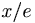

De: La Frikipedia, la enciclopedia extremadamente seria.
De: La Frikipedia, la enciclopedia extremadamente seria. De: La Frikipedia, la enciclopedia extremadamente seria.

|
FRIKIPEDIA QUIERE QUE ESTA DEFINICIÓN
PASE A SER UN ARTÍCULO FRIKIPÉDICO La información contenida en este artículo es una mínima parte de su jugo total, así que ponte los guantes, saca el tupperwere y empieza a exprimir el tema. Si lo haces serás recompensado con una galleta en almíbar y algo más. |
| De la serie ciudades del mundo: | |||||
| Pucela | |||||
| |||||
| Topónimo oficial | Pucela me la pela | ||||
| País | Cajjtilla | ||||
| Código postal |  | ||||
| Superficie | Roja | ||||
| Altitud | algunos metros | ||||
| Distancia | relativa | ||||
| Fundación | Hace mucho | ||||
| Población | menos hab. y pico, 2030 | ||||
| Gentilicio | Pucelanos | ||||
| Alcalde | Cualquiera menos Javi leoncho de la priba | ||||
Ciudad de fronteras no físicas, enmarcada dentro de la ciudad de Valladolid. No hay que confundir con esta,no reconocida por las autoridades y estamentos oficiales.
Pucela es una ciudad dentro de otra, cuyos habitantes se diseminan por toda la ciudad de Valladolid creando así unos límites no definibles. Se caracteriza por ser totalmente opuesta en cuanto a ideales de lo que Valladolid se ha empeñado en representar; digamos además que es una ciudad dormida en el subsconsciente de muchos ciudadanos vallisoletanos, que no saben que dentro de su Valladolid ideal, existe otra ciudad invisible a los ojos del que no la quiere ver. Entre los pucelanos existe un dicho escuchado sobretodo fuera de las tierras vallisoletanas, que reza exactamente así:
«Hay dos tipos de personas: los de Valladolid y los de Pucela.»
~ Pucelanos Sobre los de valladolid.
Esto es un símbolo el cual las autoridades se han empeñado en soterrar, el sentir pucelano.
Cabe destacar que los pucelanos son muchísimo peores que los vallisoletanos. Un pobre vallisoletano es buena gente amigable gente sin mas, mientras que un puto pucelano cree que su Pucela es el ombligo del mundo, todos los grandes personajes de la historia son pucelanos (o tienen ascendencia pucelana) y que León es una mierda (cosa que no es cierta ni mucho menos).
Por último, un esquema para dejar claros los conceptos de Valladolid y Pucela:
Valladolid, o Pucela por los ojos inexpertos, serian lo mismo, no siendo así y habiendo quedado explicado en este articulo.
Pucela, no sería lo mismo que Valladolid, aunque históricamente se enmarque dentro, y por supuesto mucho menos que ver con el concepto de capital de España asignado con cierto acierto a Valladolid.
Puzela, hay quien dice que éste se encuentra dentro de Pucela, en el sector más radical, pero de momento no hay pruebas concluyentes entorno a ello, en todo caso formaría parte de Pucela.
Bilbao, que no tiene nada que ver.
Félix el gato, que es un dibujo animado; un gato que no tiene nada que ver con Pucela, y menos con Bilbao.
León, es la eterna enemiga de Pucela y un poco de Valladolid.
Autor(es):